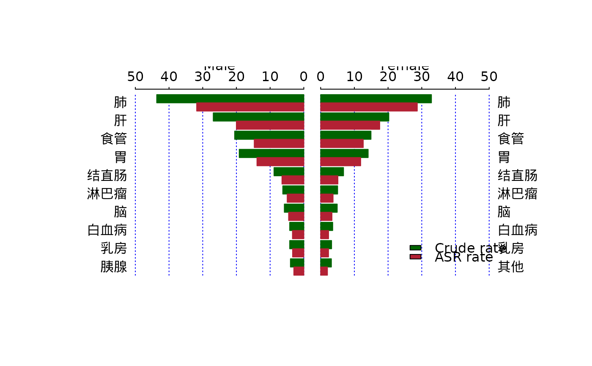

dulbar_chart.RdPlot dual bar chart.
A data frame.
Top n values to show.
The width of center gap. Default is 0.1.
Space between bars.
The vertical adjustment factor for the labels of age classes. Default is -0.01.
The font size to write the labels on sides. Default is 1.
Logical value to draw the vertical dotted lines. Default is TRUE.
Labels for the two sides.
Legends for the bars.
The colors of the bars.
The density of hatching lines (/inch).
The main title for the dulbar.
Other options.
A dulbar chart.
library(canregtools)
file <- system.file("extdata", "411721.xls", package = "canregtools")
data <- read_canreg(file)
#> 2200 cases were read from FB sheet.1470 cases were read from SW sheet.
rate <- asr_rate(data, icd_cat, event = sws)
#> [1] "Processing data: 2200 FBcases."
#> [1] "Processing data: 1470 SWcases."
#> [1] "Processing POP data of year: 2016"
dulbar_chart(rate[,c(1, 3, 6, 9, 10)])
